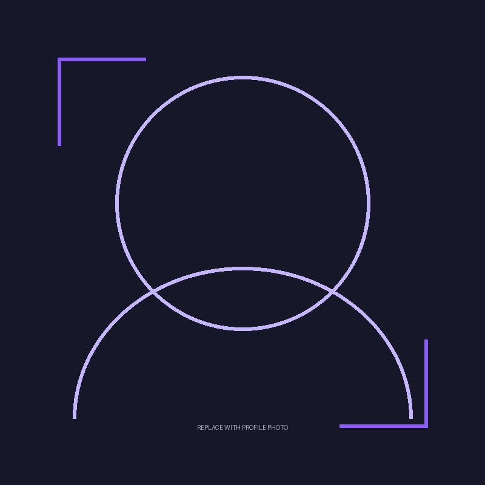

Hello, I’m Islam.
ESLAMMOHAMED
Developer & Digital Creator
I’m learning to turn ideas into digital experiences through code, visual systems, and patient experimentation.
Interactive 3D is unavailable in this browser.
The experience continues below.
01 — ABOUT
Learning the craft
behind the screen.
I’m interested in the space where programming, visual design, and human attention meet. Every project is a chance to understand a little more: how a clear system can make an idea feel natural, useful, and unexpectedly alive.
This is an honest record of experiments, study, and small leaps forward. I’m building the fundamentals one thoughtful interface at a time.
See what I’m exploring ↗
IMDigital creatorin progress
02 — EXPERTISE
Tools for
the next idea.
A living list of technologies I’m learning or have used. No inflated labels — just the current toolkit.
03 — SELECTED PROJECTS
Experiments with
somewhere to go.
Concepts and demonstrations until real deployments take their place. Click any study to open its notes.
04 — JOURNEY
Small steps,
kept visible.
An editable timeline for learning and development. Replace the examples with your real milestones when you’re ready.
05 — CONTACT
Let’s make room
for a good idea.
If you’d like to share a project, a question, or a useful point of view, the best way to reach me is directly.